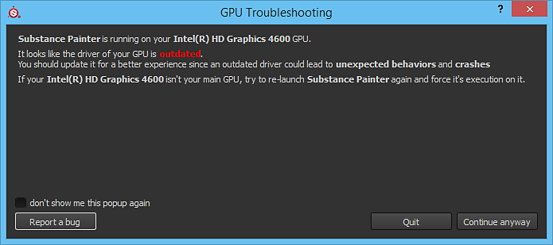

When launching Substance 3D Painter a pop-up window can appear mentioning that the GPU drivers are outdated. This message simply means the software requires a minimum version of the GPU drivers to be installed. We recommended updating the GPU drivers to the latest version available when possible to get the best working experience.
| Vendor | Link |
|---|---|
| NVIDIA | http://www.nvidia.com/Download/index.aspx
|
| AMD | http://support.amd.com/en-us/download |
| Intel | https://downloadcenter.intel.com/ |
Some computers may have two GPUs: an integrated one (like an Intel chipset) and a dedicated one (like an Nvidia graphics card). Both need to be up to date to minimize the risk of bugs in Painter.